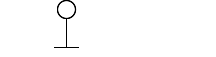
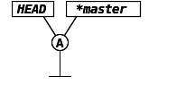
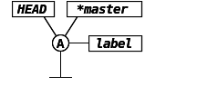
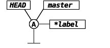
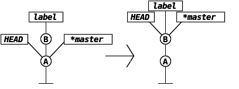
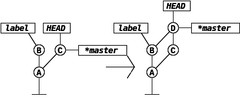
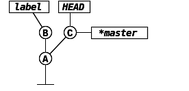
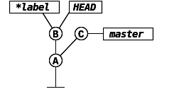
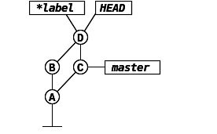
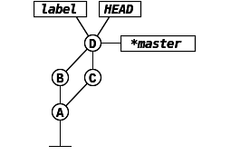

add Writes files to the repo. (Into the staging area.)

commit Creates commit object for added files, which has an id, and then puts labels on it [HEAD, master] (or moves them from previous commit). (Prints branch label that it's advancing and objects hash)

branch <label> Stucks a new label on HEAD (withouth parameter it prints local branches). (With -r will print remote branches/ all the references that you have.)

checkout <label> Switches which branch it's going to advance at commit (from master to label). (If the labels were pointing to different commits it would also get the files)

merge <label> Merge contents of <label> branch into HEAD. Also second <label> parameter possible -> will merge into it instead of current branch. There are two strategys in which git will merge two branches:
fast forward - If the <label> is rom HEAD and it is located

recursive strategy - Merges contents and creates new commit that has two parents (it can have any number of parents). Moves currnet branch and HEAD labels to it (<label> stays behind).

reset -hard head^ Move current label to commit HEAD-1, and also do checkout (--hard)
log --graph --decorate --all Shows nice history with graph
tag v1.0 <a> -> checkout v1.0 If no branch label is on this commit you get message: "You are in detached head state", meaning that if you want to keep your commits, you need to create a new branch.
1. starting position

2. checkout lable
3. merge master (recursive), test

4. checkout master, merge label (fast forward)

clone <url or path of origin> <optional different name> Makes a copy of remote repository. State of our repo after clone:
+--------------------+----+- tracking branches - they mean: last time I v ORIGIN/LABEL <-----+ | talked with origin, thats where its labelGIN/HEAD | ORIGIN/MASTER <-+ was. \|/ HEAD--(D)--*MASTER <------- Also it did not pull over LABEL branch, / | because it pulls over only the default (B)(C) branch, which is master (note that origin | / and master are just names, they have no (A) segnificance). | ---

clone --bare <url or path of origin> <optional different name> - Make a copy of repo, containing only contents of .git directory (there is no checkout.
remote -v - List remotes (defaultly named origin)
pull - Same as FETCH + MERGE
push <origin> <local branch> - Pushes changes made to the local branch to origin repo.